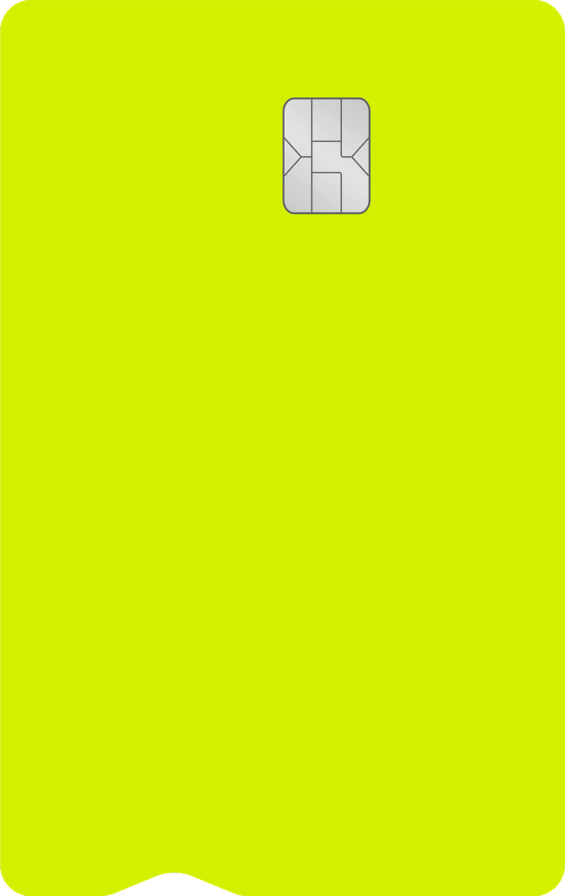
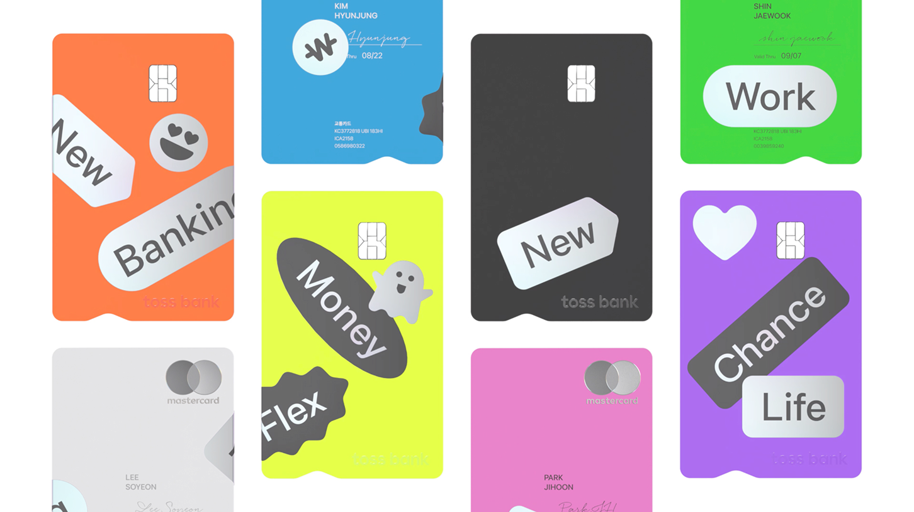

토스뱅크 통장
12,450,000 원
소비 분석
이민주님의 소비패턴을 분석했어요
주로 요일에 많이 소비했어요
가장 많이 쓴 카테고리는 식비에요
이민주님을 위한 추천 카드는 토스뱅크 체크카드에요

쓰던 통장 그대로,
누릴 혜택은 더 좋아져요
누릴 혜택은 더 좋아져요
토스뱅크 체크카드
- 연 2% 입출금 통장으로 변신!
- 누르면, 매일 이자 받기
- 체크카드 혜택은 그대로
